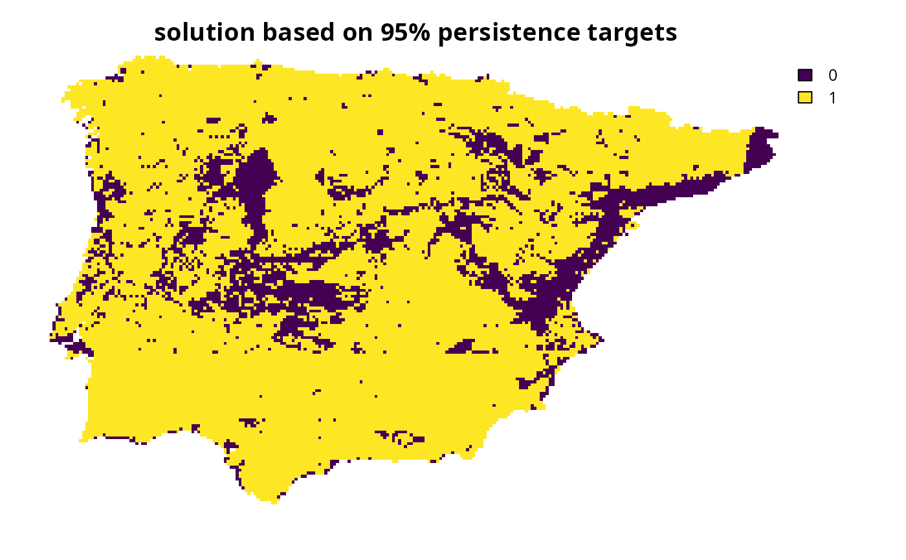
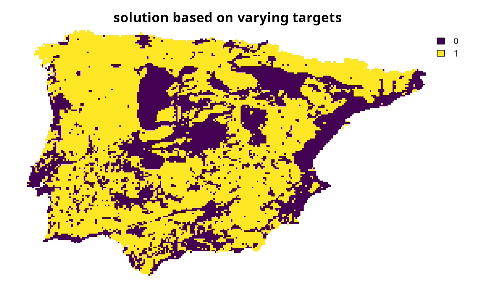

Specify targets based on the methodology outlined by
Duran et al. (2020).
Briefly, this target setting method involves using historical distribution
data to infer the minimum amount of habitat required for a species to have
a particular probability of persisting indefinitely.
Note that this function is designed to be used with add_auto_targets()
and add_group_targets().
Arguments
- probability_target
numericvector denoting the minimum probability of persistence for each feature. For example, a value of 0.1 corresponds to a 10% chance of persistence, and a value of 1 corresponds to a 100% chance of persistence. Values must range between 0 and 1. If a singlenumericvalue is specified, then all features are assigned targets assuming the same probability threshold.- historical_area
numericvector denoting the total area encompassed by the historical distribution for each feature (e.g., in km2). If a singlenumericvalue is specified, then all features are assigned targets assuming the same historical distribution size. See Details section for information on obtaining these data.- area_units
charactervector denoting the unit of measurement for the argument tohistorical_area. For example, to specify thathistorical_areacontains historical distribution sizes expressed as km2, thenarea_units = "km^2"should be used. If a singlecharactervalue is specified, then all features are assigned targets assuming the same area units.
Value
An object (Method) for specifying targets that
can be used with add_auto_targets() and add_group_targets()
to update the targets for a problem().
Details
This target setting method is derived from a framework for estimating the impacts of anthropogenic activities at national and global scales (Duran et al. 2020). It involves setting targets based on an estimate of the minimum amount of habitat required for a species to have a particular probability of persistence. Although the gold standard approach for estimating such an amount of habitat would involve population viability analysis (e.g., Taylor et al. 2017), population viability analyses require a considerable amount of species-specific data that are often not available for conservation planning exercises (reviewed by Akçakaya and Sjögren-Gulve 2000). As such, this method provides a less data intensive alternative for setting targets based on desired probabilities of persistence. Please note that this function is provided as convenient method to set targets for problems with a single management zone, and cannot be used for those with multiple management zones.
This target setting method relies heavily on assumptions. In particular, it is based on the assumption that – for a given species – there is an idealized distribution size (e.g., geographic range size) that would allow for the species to have a 100% chance of persisting indefinitely, and decreases in this distribution size would be associated with reductions in the species' probability of persistence (Payne and Finnegan 2007; Purvis et al. 2000). Building on this assumption, it further assumes that (i) the historical distribution of a species can reliably approximate its idealized distribution size with a 100% chance of persisting indefinitely, and (ii) proportionate decreases in the species' distribution size (relative to its idealized distribution size) are associated with increasingly greater reductions in probability of persistence (i.e., following a power-law function with an exponent of 0.25) (Balmford et al. 2018; Brooks et al. 1999; Thomas et al. 2004). Based on these assumptions, this method involves estimating the minimum amount of habitat required to ensure that a species has, at least, a particular probability of persistence, and then setting the species' representation target accordingly.
The validity of this target setting method depends on how well its assumptions are justified. As such, great care should be taken to ensure that the historical distribution of a species used to approximate its idealized distribution does indeed have a (near) 100% probability of persistence (Durán et al. 2020). Although the package does not provide historical distribution data, such data can be derived from species distribution modeling techniques. For example, one approach for characterizing the historical distribution of a species is to fit an environmental niche model based on present-day environmental data and then use historical environmental data to predict the species' historical distribution (reviewed by Nogués‐Bravo 2009). Another approach involves using the area of habitat framework (reviewed by Brooks et al. 2019) with information on a species' habitat preferences, current and former (i.e., now extinct) geographic ranges, and historical land cover data (Eyres et al. 2025).
Mathematical formulation
This method involves setting target thresholds based on the area
required to ensure that each feature meets a pre-specified
probability of persistence.
To express this mathematically, we will define the following terminology.
Let \(f\) denote the total abundance of a feature (e.g., current geographic
range size expressed as km2),
\(h\) the historical total abundance of the feature (e.g., historical
range size expressed as km2,
per historical_area and area_units),
and \(p\) the desired threshold probability of persistence for the
feature.
Given this terminology, the target threshold (\(t\)) for the feature
is calculated as follows.
$$
t = min(f, h \times p^{\frac{1}{0.25}})
$$
Data calculations
This function involves calculating targets based on the spatial extent
of the features in x.
Although it can be readily applied to problem() objects that
have the feature data provided as a terra::rast() object,
you will need to specify the spatial units for the features
when initializing the problem() objects if the feature data
are provided in a different format. In particular, if the feature
data are provided as a data.frame or character vector,
then you will need to specify an argument to feature_units when
using the problem() function.
See the Examples section of the documentation for add_auto_targets()
for a demonstration of specifying the spatial units for features.
References
Akçakaya HR, Sjögren-Gulve P (2000) Population viability analyses in conservation planning: an overview. Ecological Bulletins, 48:9–21. Balmford B, Green RE, Onial M, Phalan B, Balmford A (2018) How imperfect can land sparing be before land sharing is more favourable for wild species? Journal of Applied Ecology, 56:73–84.
Brooks TM, Pimm SL, Akçakaya HR, Buchanan GM, Butchart SHM, Foden W, Hilton-Taylor C, Hoffmann M, Jenkins CN, Joppa L, Li BV, Menon V, Ocampo-Peñuela N, Rondinini C (2019) Measuring terrestrial area of habitat (AOH) and its utility for the IUCN Red List. Trends in Ecology and Evolution, 34:977–986
Brooks TM, Pimm SL, Oyugi JO (1999) Time lag between deforestation and bird extinction in tropical forest fragments. Conservation Biology, 13:1140–1150.
Durán AP, Green JMH, West CD, Visconti P, Burgess ND, Virah‐Sawmy M, Balmford A (2020) A practical approach to measuring the biodiversity impacts of land conversion. Methods in Ecology and Evolution, 11:910–921.
Eyres A, Ball TS, Dales M, Swinfield T, Arnell A, Baisero D, Durán AP, Green JMH, Green RE, Madhavapeddy A, Balmford A (2025) LIFE: A metric for mapping the impact of land-cover change on global extinctions. Philosophical Transactions of the Royal Society B: Biological Sciences, 380: 20230327.
Nogués‐Bravo D (2009) Predicting the past distribution of species climatic niches. Predicting the past distribution of species climatic niches. Global Ecology and Biogeography, 18:521–531.
Payne JL, Finnegan S (2007) The effect of geographic range on extinction risk during background and mass extinction. Proceedings of the National Academy of Sciences, 104:10506–10511.
Purvis A, Gittleman JL, Cowlishaw G, Mace GM (2000) Predicting extinction risk in declining species. Proceedings of the Royal Society of London. Series B: Biological Sciences, 267:1947–1952.
Taylor C, Cadenhead N, Lindenmayer DB, Wintle BA (2017) Improving the design of a conservation reserve for a critically endangered species. PLOS ONE, 12:e0169629.
Thomas CD, Cameron A, Green RE, Bakkenes M, Beaumont LJ, Collingham YC, Erasmus BFN, de Siqueira MF, Grainger A, Hannah L, Hughes L, Huntley B, van Jaarsveld AS, Midgley GF, Miles L, Ortega-Huerta MA, Townsend Peterson A, Phillips OL, Williams SE (2004) Extinction risk from climate change. Nature 427:145–148.
See also
Other target setting methods:
spec_absolute_targets(),
spec_area_targets(),
spec_interp_absolute_targets(),
spec_interp_area_targets(),
spec_jung_targets(),
spec_max_targets(),
spec_min_targets(),
spec_polak_targets(),
spec_pop_size_targets(),
spec_relative_targets(),
spec_rl_ecosystem_targets(),
spec_rl_species_targets(),
spec_rodrigues_targets(),
spec_rule_targets(),
spec_ward_targets(),
spec_watson_targets(),
spec_wilson_targets()
Examples
# \dontrun{
# set seed for reproducibility
set.seed(500)
# load data
sim_complex_pu_raster <- get_sim_complex_pu_raster()
sim_complex_features <- get_sim_complex_features()
sim_complex_historical_features <- get_sim_complex_historical_features()
# calculate the total historical distribution size for each feature.
# note that here we assume that the features in both sim_complex_features
# and sim_complex_historical_features follow the same ordering
historical_distribution_size <- as.numeric(units::set_units(
units::set_units(
terra::global(sim_complex_historical_features, "sum", na.rm = TRUE)[[1]] *
prod(terra::res(sim_complex_historical_features)),
"m^2"
),
"km^2"
))
# create base problem
p0 <-
problem(sim_complex_pu_raster, sim_complex_features) %>%
add_min_set_objective() %>%
add_binary_decisions() %>%
add_default_solver(verbose = FALSE)
# create problem with targets based on the minimum amount of habitat required
# to ensure that each species has a 95% probability of persistence,
# following Duran et al. (2020)
# a 95% probability of persistence
p1 <-
p0 %>%
add_auto_targets(
method = spec_duran_targets(
probability_target = 0.95,
historical_area = historical_distribution_size,
area_units = "km2"
)
)
# solve problem
s1 <- solve(p1)
# plot solution
plot(s1, main = "solution based on 95% persistence targets", axes = FALSE)

# create problem with targets based on the minimum amount of habitat required
# to ensure that each species has a particular probability of persistence,
# following Duran et al. (2020)
# simulate a probability of persistence value for each feature
sim_probs <- runif(terra::nlyr(sim_complex_features), 0.1, 0.99)
# now, create problem with these targets
p2 <-
p0 %>%
add_auto_targets(
method = spec_duran_targets(
probability_target = sim_probs,
historical_area = historical_distribution_size,
area_units = "km2"
)
)
# solve problem
s2 <- solve(p2)
# plot solution
plot(s2, main = "solution based on varying targets", axes = FALSE)

# }